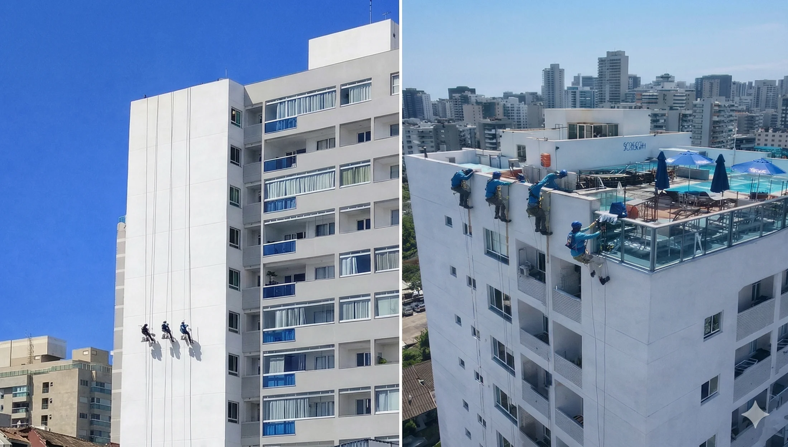

Especialistas em Revitalização e Reforma de Fachadas em Condomínios na Grande Vitória.
O visual do seu edifício dita o valor do seu patrimônio. Engenharia de precisão e estética de alto padrão para máxima valorização no mercado capixaba.


Atendimento exclusivo para
síndicos e gestores prediais.
BLINDANDO SEU CONDOMÍNIO CONTRA O TEMPO E A MARESIA ✦ ELEVANDO O PADRÃO E O VALOR DO SEU METRO QUADRADO ✦
BLINDANDO SEU CONDOMÍNIO CONTRA O TEMPO E A MARESIA ✦ ELEVANDO O PADRÃO E O VALOR DO SEU METRO QUADRADO ✦
BLINDANDO SEU CONDOMÍNIO CONTRA O TEMPO E A MARESIA ✦ ELEVANDO O PADRÃO E O VALOR DO SEU METRO QUADRADO ✦
BLINDANDO SEU CONDOMÍNIO CONTRA O TEMPO E A MARESIA ✦ ELEVANDO O PADRÃO E O VALOR DO SEU METRO QUADRADO ✦